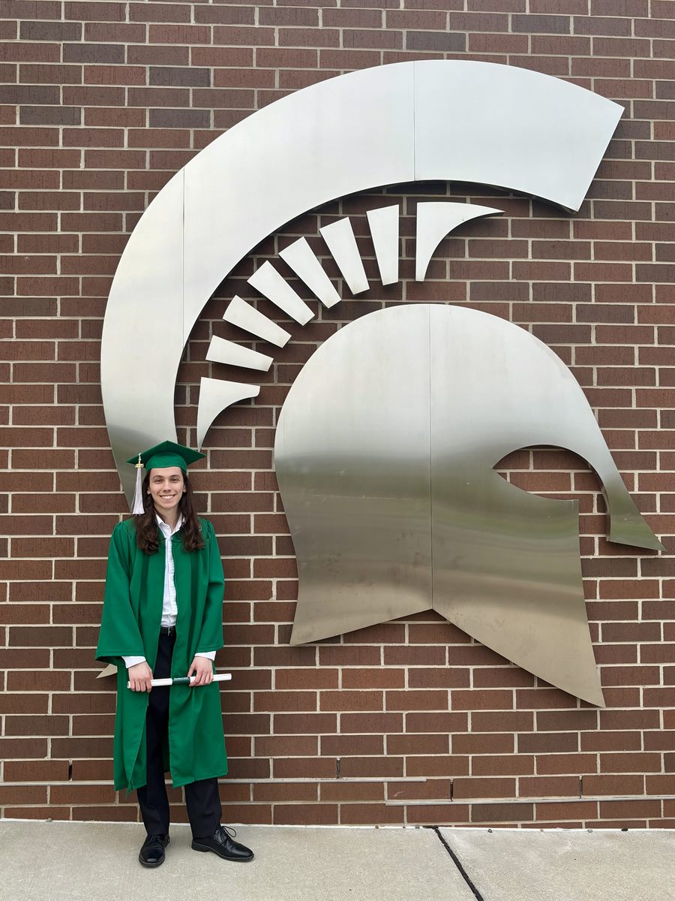

About

Hi I'm Nick! I'm a game developer who specializes in game programming and technical design. I'm incredibly passionate about my work and love making games, especially ones that are systems heavy.
I graduated from Michigan State University in 2026 with a B.S. in Games and Interactive Media and a minor in Game Design. During my time at MSU, I worked on both large and small team projects, always doing some kind of programming work. I also helped run the student led Spartasoft Studio club at MSU, where I guided a team of programming students to create a large scale game project.
Outside of game development, I enjoy sports (go Lions and Tigers!), music, games, and spending time outdoors. I also love to play guitar and occasionally write music.